31 days of horror.
One critically acclaimed horror film for every day of October, from Psycho to Sinners, with most picks from the last 25 years. They run in the order they were made, saving Halloween for the 31st. Copy the key and the whole month lands in Kuvacult as one watchlist.
Enter this code in Kuvacult to create this watchlist, already in order.
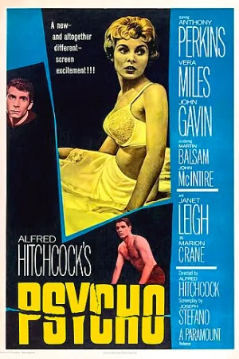
Oct 1Psycho
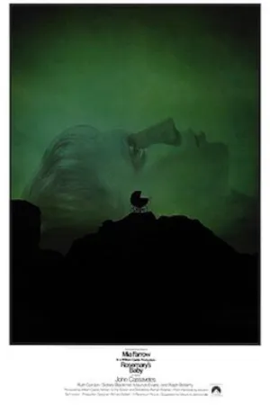
Oct 2Rosemary’s Baby
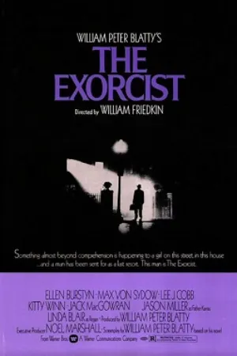
Oct 3The Exorcist
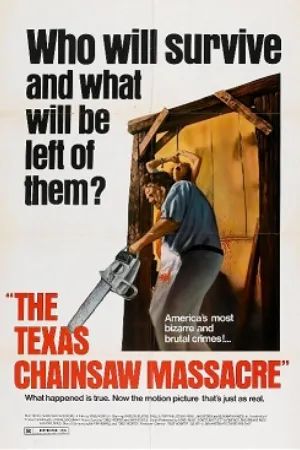
Oct 4The Texas Chain Saw Massacre
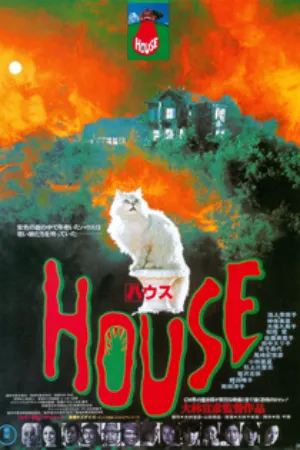
Oct 5House
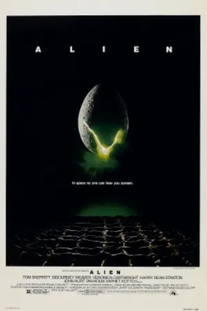
Oct 6Alien
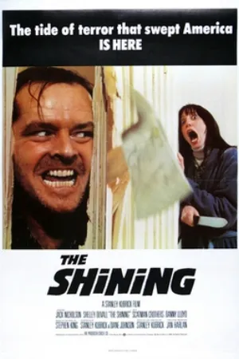
Oct 7The Shining
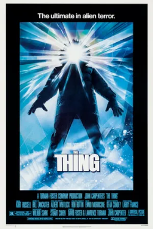
Oct 8The Thing
- Oct 9
The Silence of the Lambs
- Oct 10
Audition
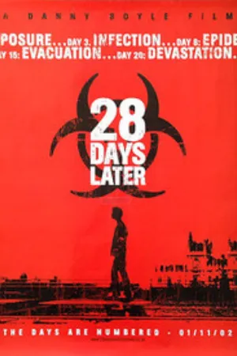
Oct 1128 Days Later
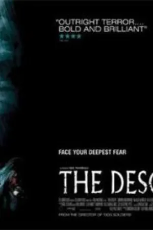
Oct 12The Descent
- Oct 13
Let the Right One In
- Oct 14
Drag Me to Hell
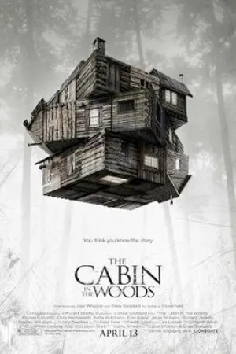
Oct 15The Cabin in the Woods
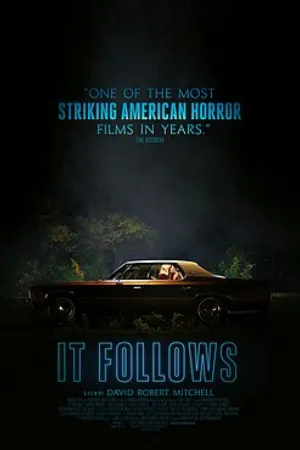
Oct 16It Follows
- Oct 17
The Witch
- Oct 18
Train to Busan
- Oct 19
Get Out
- Oct 20
A Quiet Place
- Oct 21
Hereditary
- Oct 22
Midsommar
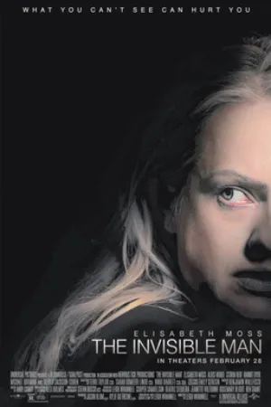
Oct 23The Invisible Man
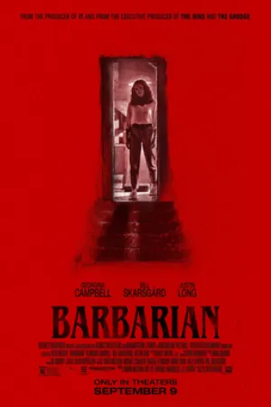
Oct 24Barbarian
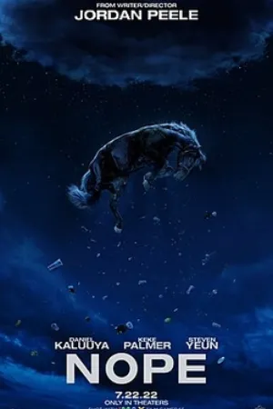
Oct 25Nope
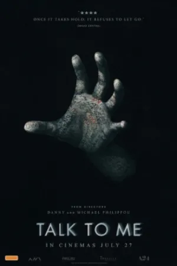
Oct 26Talk to Me
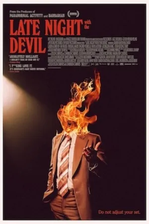
Oct 27Late Night with the Devil
- Oct 28
The Substance
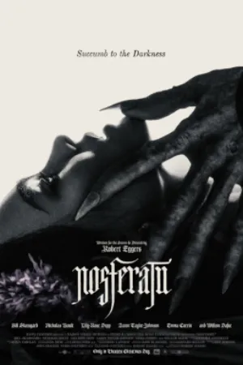
Oct 29Nosferatu
- Oct 30
Sinners
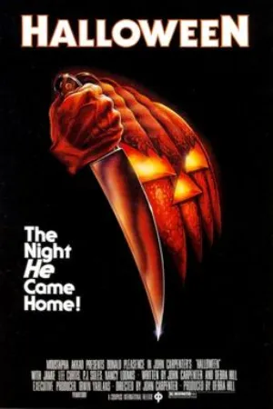
Oct 31Halloween
Make it a group challenge
Share the watchlist with friends so everyone can tick films off together, and host a séance on the nights you can’t be in the same room. Want more? Try our A24 horror watch order or the full Halloween timeline.
Questions
What are the best horror movies to watch in October?
This list picks 31 critically acclaimed horror films, one for each day, from Psycho (1960) to Sinners (2025), ending with Halloween on October 31. Most are from the last 25 years.
How do I get all 31 films as a watchlist?
Copy the key @KV31H and paste it in Kuvacult under Watchlists. The films are added in calendar order.
Can I do the challenge with friends?
Yes. Make the list a shared watchlist so everyone can track it together, and use séances for the nights you watch online.
Watch it with your friends.
Kuvacult is a free movie tracker with shared watchlists, a veto game for picking movie night, and séances for watching together.